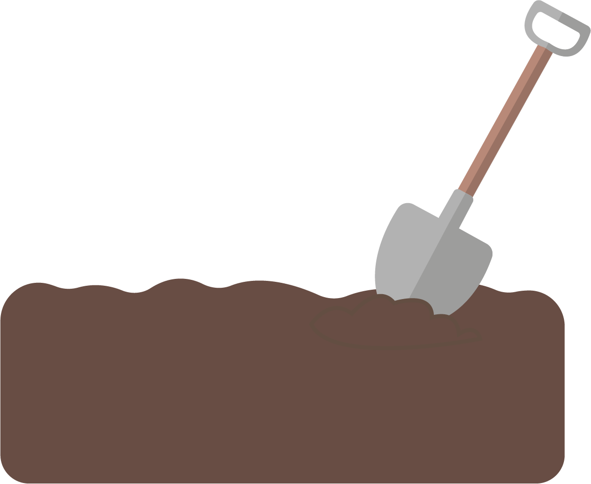
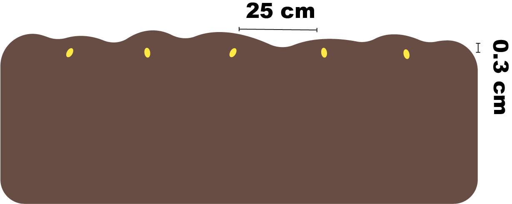
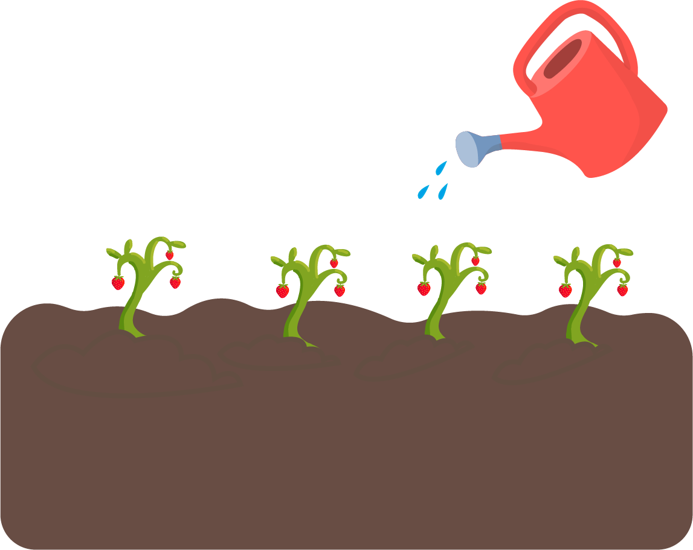

Aardbeien
Planten in: Februari - Maart
Oogsten in: Juni - Oktober
Stap 1
Zorg voor luchtige en vochthoudende grond. Spit de grond door en voeg eventueel mest of plantenvoeding toe.
Stap 2
Plant de zaadjes 3mm diep en ongeveer 25 cm uit. Door ze genoeg uit elkaar te planten krijgen de plantjes voldoende licht en lucht. Span eventueel een plastic folie over het plantbed .Zo vermijd je onkruid en zorg je ervoor dat de bodem vocht en warmte beter vasthoudt.
Stap 3
Geef de plantjes elke dag water. Hoe groter de plant wordt hoe meer water ze nodig hebben.
Tip
Verwijder regelmatig de rottende aardbeien om schimmelziekten in de kiem te smoren.